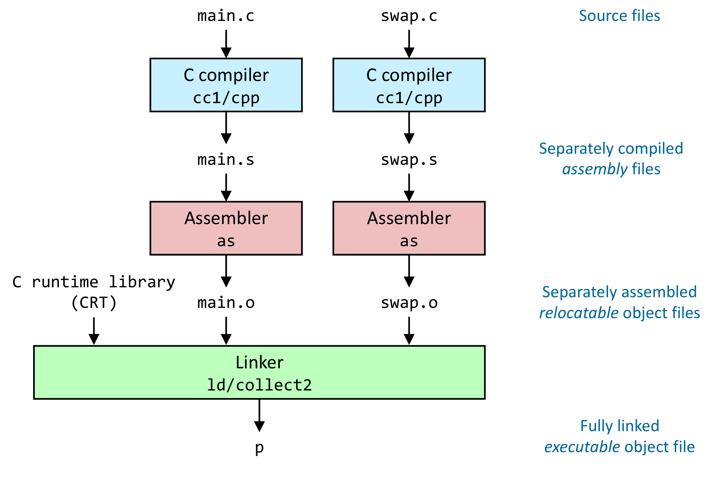
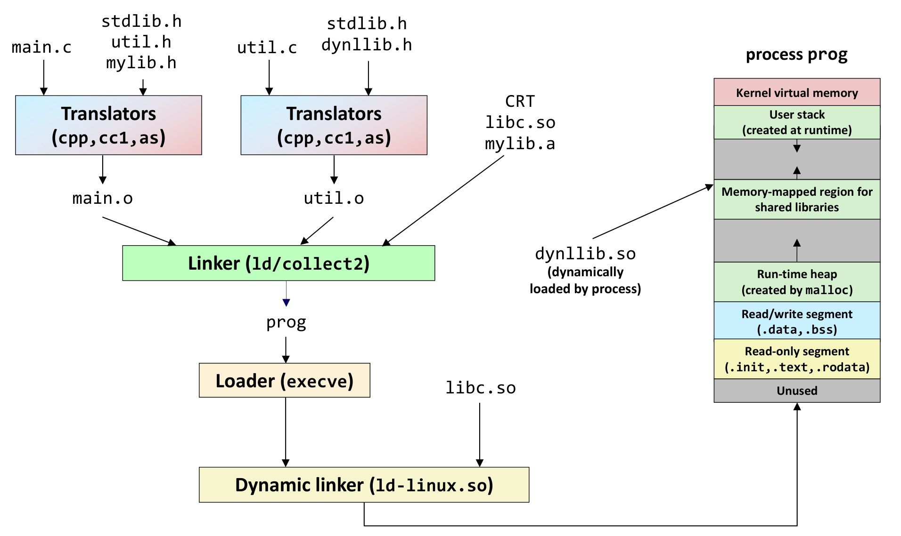
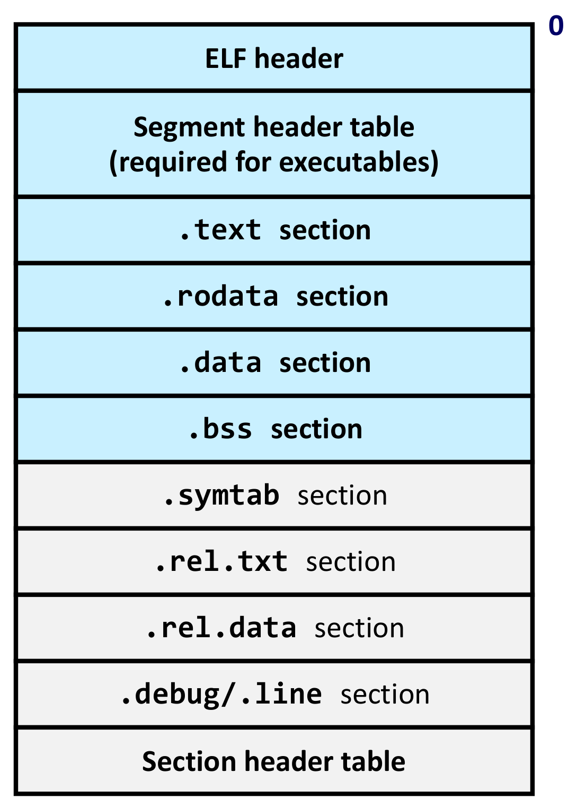
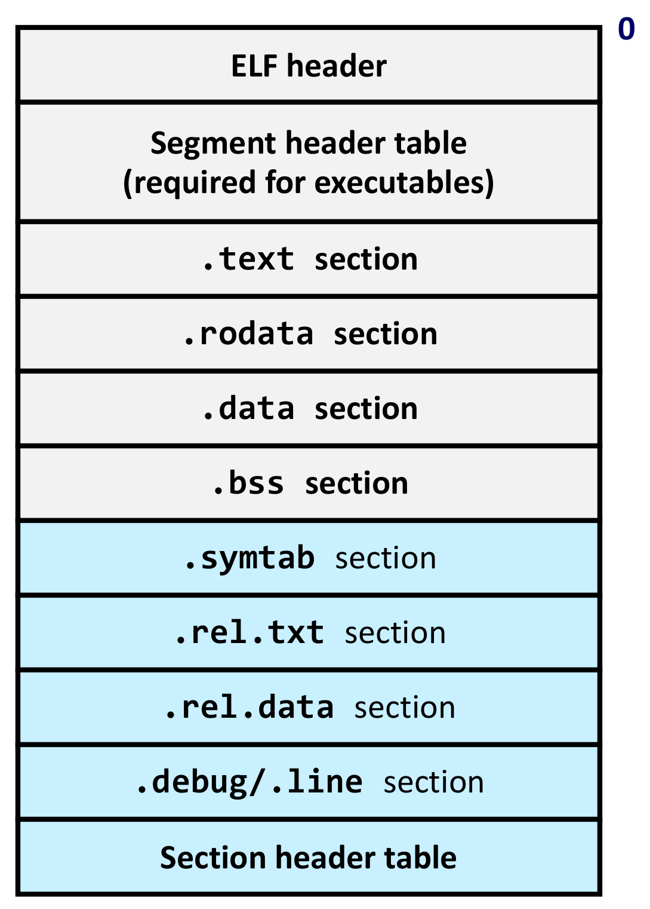
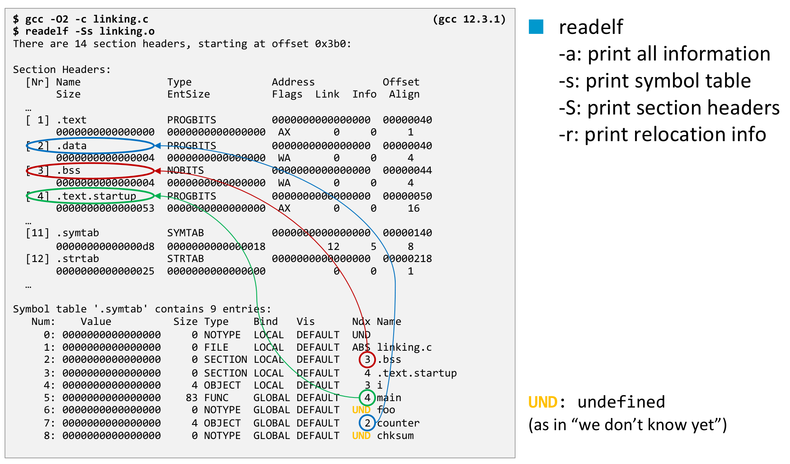
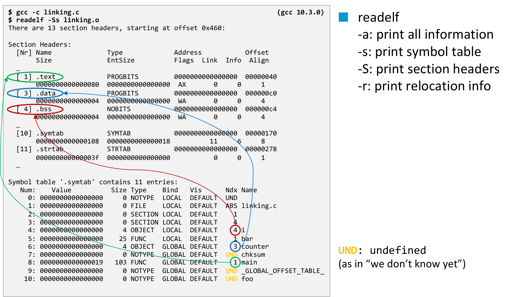

본 포스트는 서울대학교 컴퓨터공학부 시스템 프로그래밍(System Programming, M1522.000800, Fall 2026) 강의 자료 중 10강 — The Runtime Environment: Life Cycle of a Program (총 25장)를 바탕으로, 강의를 처음 듣는 독자도 논리적 흐름을 따라갈 수 있도록 재구성한 것입니다. 원본 슬라이드는 영문으로 작성되어 있습니다. 이 강의는 The Runtime Environment 단원을 여는 Part I: Life Cycle of a Program, Overview이며, 그 뒤로 Part II Linking and Loading과 Part III Libraries가 이어집니다. 본문의 대섹션 구분은 강의 첫머리의 Lecture Overview 슬라이드(Life Cycle of a Program → Linking Overview → Executable and Linkable Format → Summary)를 그대로 따랐습니다.
한 줄 요약 (TL;DR)
“
gcc한 줄은 번역기 · 어셈블러 · 링커를 차례로 부르는 드라이버이고, 그들이 주고받는 공용어가 ELF입니다.”우리는
gcc -o p main.c swap.c한 줄로 실행 파일을 얻지만, GCC는 사실 컴파일러 드라이버(compiler driver)일 뿐입니다. 그 뒤에서는 소스 파일마다 따로cc1(컴파일러)과as(어셈블러)가 돌아 재배치 가능 오브젝트 파일(relocatable object file)을 만들고, 마지막에collect2/ld(링커)가 이것들을 C 런타임(CRT) · 라이브러리와 한데 묶어 실행 파일을 만듭니다. 파일을 따로 컴파일하는 덕분에 모듈성과 효율(고친 파일만 다시 컴파일하고, 라이브러리에서는 쓰는 함수만 가져옴)을 얻지만, 그 대가로 컴파일러는 다른 파일에 정의된 함수와 변수의 주소를 모르는 채로 코드를 만들어야 합니다. 컴파일러는 모르는 것을 모른다고 적어 두고(UND), 링커가 그 빈칸을 두 단계로 메웁니다 — 모든 심볼 참조를 정확히 하나의 정의에 잇는 심볼 해석(symbol resolution), 같은 종류의 섹션을 합쳐 실행 시 주소를 매긴 뒤 참조를 고쳐 쓰는 재배치(relocation). 이 작업의 재료인 코드 · 데이터 섹션, 심볼 테이블, 재배치 정보를 오브젝트 파일 · 실행 파일 · 공유 라이브러리가 하나의 형식으로 담는데, 그것이 ELF입니다. 마지막으로readelf로 실제 오브젝트 파일을 열어, 심볼마다 적힌 섹션 번호(Ndx)를 섹션 헤더 테이블과 맞춰 읽는 법을 익힙니다.
1. 프로그램의 생애 주기 (Life Cycle of a Program)
강의는 파일 두 개짜리 작은 C 프로그램을 컴파일하는 데서 출발합니다. 명령은 gcc 한 줄이지만, 그 한 줄 아래에서 무슨 일이 일어나는지를 한 겹씩 벗겨 가면 소스 코드가 실행 중인 프로세스가 되기까지의 전 과정 — The Runtime Environment 단원 전체의 지도 — 이 드러납니다.
1.1 간단한 C 프로그램 (A Simple C Program)
프로그램은 두 파일로 나뉘어 있습니다. main.c는 두 원소짜리 전역 배열 buf를 정의하고, 그 내용을 출력한 뒤 swap()을 부르고, 다시 출력합니다.
#include <stdio.h> // 슬라이드에서는 생략된 줄 (printf)
#include <stdlib.h> // 슬라이드에서는 생략된 줄 (EXIT_SUCCESS)
int buf[2] = {1, 2};
int main() {
printf("[ %d, %d ]\n",
buf[0],buf[1]);
swap(); // 선언 없이 호출 → 아래의 implicit declaration 경고
printf("[ %d, %d ]\n",
buf[0],buf[1]);
return EXIT_SUCCESS;
}swap.c는 buf를 직접 정의하지 않고 extern으로 선언만 한 채, 두 포인터를 거쳐 두 원소를 맞바꿉니다.
extern int buf[]; // 정의는 main.c에 있음 → 이 파일은 참조만 함
int *bufp0 = &buf[0]; // bufp0을 정의하면서, buf를 참조
static int *bufp1; // static: 이 파일 안에서만 보이는 전역 포인터
void swap() { // swap을 정의
int temp; // 지역 변수: 실행 시 스택에 놓임
bufp1 = &buf[1];
temp = *bufp0;
*bufp0 = *bufp1;
*bufp1 = temp;
}슬라이드는 지면 관계로 main.c의 #include 두 줄을 생략했습니다. printf와 EXIT_SUCCESS를 쓰려면 <stdio.h>와 <stdlib.h>가 필요하고, 아래 경고가 swap();을 9번째 줄(main.c:9:3)로 가리키는 것도 그 위에 세 줄이 더 있어야 맞아떨어지므로, 위 코드에서는 그 두 줄과 빈 줄 하나를 복원해 두었습니다.
두 파일을 GCC로 한 번에 컴파일해 실행 파일 p를 만들고 실행하면 다음과 같습니다.
$ gcc -O2 -Wall -g -o p main.c swap.c
main.c: In function ‘main’:
main.c:9:3: warning: implicit declaration of function ‘swap’ [-Wimplicit-function-declaration]
9 | swap();
| ^~~~
$ ./p
[ 1, 2 ]
[ 2, 1 ]
$- 옵션은 순서대로 최적화(
-O2), 경고 모두 켜기(-Wall), 디버깅 정보 포함(-g), 출력 파일 이름을p로(-o p)입니다. - 두 파일은 서로의 존재를 전제합니다.
main.c는swap을 부르기만 하고,swap.c는buf를 선언만 합니다. 어느 파일도 혼자서는 완결된 프로그램이 아닙니다. - 그런데도 결과는 정확합니다.
swap()호출 전후로[ 1, 2 ]가[ 2, 1 ]로 바뀌었다는 것은swap.c의 코드가main.c의buf를 실제로 건드렸다는 뜻이고, 곧 두 파일이 하나의 프로그램으로 제대로 합쳐졌다는 증거입니다. 누가, 어떻게 합쳤는지가 이 강의의 주제입니다.
main.c에는 swap의 선언이 없으므로, 컴파일러는 swap이 어떤 인자를 받고 무엇을 돌려주는지 모른 채 암묵적 선언(implicit declaration) — 옛 C의 규칙대로 int swap() — 을 가정하고 넘어갑니다. 실제 정의는 void swap()이지만, main이 반환값을 쓰지 않으니 이번에는 무사히 동작했을 뿐입니다.
이 불일치는 뒤에서도 잡히지 않습니다. 2장에서 보게 될 심볼 테이블에는 C의 타입이 기록되지 않아서, 링커는 이름만 맞춰 볼 뿐 인자와 반환 타입이 맞는지는 확인하지 못합니다. 이 경고는 1.6절의 첫 번째 질문 — 다른 파일에 정의된 함수의 타입을 컴파일러는 어떻게 확인하는가 — 의 예고편인 셈입니다. 참고로 GCC 14부터는 C99 이후 모드에서 이 경고가 기본적으로 오류로 바뀌었으므로, 최신 컴파일러로 이 예제를 재현하려면 main.c에 void swap(); 선언을 넣어 두는 편이 안전합니다.
1.2 GCC는 컴파일러 드라이버입니다 (GCC is, in fact, a compiler driver)
우리가 흔히 “컴파일러”라고 부르는 gcc는 사실 스스로 컴파일을 하지 않습니다.
- GCC는 컴파일러 드라이버(compiler driver)입니다.
- 소스 코드를 실행 파일로 바꾸는 일련의 명령들을 대신 실행해 줍니다.
-v(verbose) 옵션을 붙이면 드라이버가 무엇을 하는지 전부 보여 줍니다. (한 줄로 출력되는 긴 줄은 가독성을 위해 인자 경계에서 나눴습니다. 이하 같습니다.)
$ gcc -v -O2 -Wall -g -o p main.c swap.c
Using built-in specs.
COLLECT_GCC=gcc
COLLECT_LTO_WRAPPER=/usr/libexec/gcc/x86_64-pc-linux-gnu/12/lto-wrapper
Target: x86_64-pc-linux-gnu
Configured with: /var/tmp/portage/sys-devel/gcc-12.3.1_p20230526/work/gcc-12-20230526/configure
--host=x86_64-pc-linux-gnu --build=x86_64-pc-linux-gnu
--prefix=/usr --bindir=/usr/x86_64-pc-linux-gnu/gcc-bin/12 --includedir=…
Thread model: posix
…- 머리 부분은 드라이버 자신에 대한 정보입니다. 대상 플랫폼은
x86_64-pc-linux-gnu이고, 설정 경로로 보아 GCC 12.3.1입니다. - 본론은 마지막
…에 가려진 부분, 곧 드라이버가 실제로 실행한 명령들입니다. 출력이 길기 때문에 다음 슬라이드는 거기서 명령줄만 걸러 냅니다.
1.3 GCC의 컴파일 단계 읽어 내기 (Making sense of GCC’s compilation steps)
슬라이드는 -v 출력에서 드라이버가 실행한 명령줄만 골라내기 위해 다음 파이프라인을 씁니다.
$ ( gcc -v -O2 -Wall -g -o p main.c swap.c 2>&1 ) | \
grep "^ /usr/lib" | grep -v include | \
grep -E "^ /usr[^ ]*"gcc -v의 진단 출력은 표준 오류(stderr)로 나오므로,2>&1로 표준 출력에 합쳐야 파이프로 넘길 수 있습니다.- 드라이버는 자신이 실행하는 명령을 공백 한 칸 + 절대 경로 모양의 줄로 찍습니다.
grep "^ /usr/lib"가 그런 줄만 남깁니다(/usr/libexec/…도/usr/lib로 시작하므로 함께 걸립니다). - 같은 모양으로 찍히는 헤더 탐색 경로 목록은
grep -v include로 걸러 냅니다.
결과로 남는 것은 다섯 개의 명령입니다.
/usr/libexec/gcc/x86_64-pc-linux-gnu/12/cc1 -quiet -v main.c -quiet -dumpdir p- -dumpbase main.c
-dumpbase-ext .c -mtune=generic -march=x86-64 -g -O2 -Wall -version -o /tmp/ccsVkorq.s
/usr/lib/gcc/x86_64-pc-linux-gnu/12/../../../../x86_64-pc-linux-gnu/bin/as -v --gdwarf-5 --64
-o /tmp/cc6XHLwD.o /tmp/ccsVkorq.s
/usr/libexec/gcc/x86_64-pc-linux-gnu/12/cc1 -quiet -v swap.c -quiet -dumpdir p- -dumpbase swap.c
-dumpbase-ext .c -mtune=generic -march=x86-64 -g -O2 -Wall -version -o /tmp/ccsVkorq.s
/usr/lib/gcc/x86_64-pc-linux-gnu/12/../../../../x86_64-pc-linux-gnu/bin/as -v --gdwarf-5 --64
-o /tmp/cccb7yzI.o /tmp/ccsVkorq.s
/usr/libexec/gcc/x86_64-pc-linux-gnu/12/collect2
-plugin /usr/libexec/gcc/x86_64-pc-linux-gnu/12/liblto_plugin.so
-plugin-opt=/usr/libexec/gcc/x86_64-pc-linux-gnu/12/lto-wrapper
-plugin-opt=-fresolution=/tmp/ccn23YHr.res
-plugin-opt=-pass-through=-lgcc -plugin-opt=-pass-through=-lgcc_s
-plugin-opt=-pass-through=-lc -plugin-opt=-pass-through=-lgcc
-plugin-opt=-pass-through=-lgcc_s
--eh-frame-hdr -m elf_x86_64 -dynamic-linker /lib64/ld-linux-x86-64.so.2 -pie -o p
/usr/lib/gcc/x86_64-pc-linux-gnu/12/../../../../lib64/Scrt1.o
/usr/lib/gcc/x86_64-pc-linux-gnu/12/../../../../lib64/crti.o
/usr/lib/gcc/x86_64-pc-linux-gnu/12/crtbeginS.o
-L/usr/lib/gcc/x86_64-pc-linux-gnu/12 -L/usr/lib/gcc/x86_64-pc-linux-gnu/12/../../../../lib64
-L/lib/../lib64 -L/usr/lib/../lib64
-L/usr/lib/gcc/x86_64-pc-linux-gnu/12/../../../../x86_64-pc-linux-gnu/lib
-L/usr/lib/gcc/x86_64-pc-linux-gnu/12/../../..
/tmp/cc6XHLwD.o /tmp/cccb7yzI.o
-lgcc --push-state --as-needed -lgcc_s --pop-state -lc
-lgcc --push-state --as-needed -lgcc_s --pop-state
/usr/lib/gcc/x86_64-pc-linux-gnu/12/crtendS.o
/usr/lib/gcc/x86_64-pc-linux-gnu/12/../../../../lib64/crtn.o경로가 길어 복잡해 보이지만, 무엇이 무엇을 받아 무엇을 내놓는지만 추리면 흐름은 단순합니다.
| 순서 | 실행되는 프로그램 | 입력 | 출력 |
|---|---|---|---|
| ① | cc1 (C 컴파일러) |
main.c |
/tmp/ccsVkorq.s (어셈블리) |
| ② | as (어셈블러) |
/tmp/ccsVkorq.s |
/tmp/cc6XHLwD.o (오브젝트 파일) |
| ③ | cc1 |
swap.c |
/tmp/ccsVkorq.s |
| ④ | as |
/tmp/ccsVkorq.s |
/tmp/cccb7yzI.o |
| ⑤ | collect2 (링커) |
/tmp/cc6XHLwD.o, /tmp/cccb7yzI.o + CRT 오브젝트 + 라이브러리 |
p (실행 파일) |
- 파일마다 따로: ①②와 ③④가 완전히 같은 모양으로 반복됩니다.
main.c를 번역하는 동안swap.c는 전혀 참조되지 않고, 그 반대도 마찬가지입니다. 이것이 분리 컴파일(separate compilation)입니다. - 중간 산출물은 임시 파일:
.s와.o는/tmp에 무작위 이름으로 만들어졌다가 빌드가 끝나면 사라집니다. ①과 ③이 같은 이름/tmp/ccsVkorq.s에 쓰는 것도 눈여겨볼 만합니다 — 어셈블리 파일은 바로 다음의as가 읽고 나면 쓸모가 없으므로, 드라이버가 같은 임시 파일을 다시 씁니다. - 옵션의 번역: 우리가
gcc에 준-g -O2 -Wall은cc1에게 그대로 넘어가고,-g는 어셈블러에게--gdwarf-5(DWARF 5 형식의 디버깅 정보를 만들라는 뜻)로 바뀌어 전달됩니다. 드라이버는 사용자의 옵션을 각 도구가 알아듣는 말로 옮겨 줍니다. - 링커의 입력은 우리 파일만이 아닙니다: ⑤의 긴 명령줄에서 우리가 만든 파일은
/tmp/cc6XHLwD.o와/tmp/cccb7yzI.o두 개뿐이고, 나머지는 드라이버가 알아서 채워 넣은 것입니다.
⑤의 명령줄을 조각별로 풀면 다음과 같습니다.
| 명령줄 조각 | 의미 |
|---|---|
/tmp/cc6XHLwD.o /tmp/cccb7yzI.o |
우리가 만든 두 재배치 가능 오브젝트 파일 (②·④의 출력) |
Scrt1.o, crti.o, crtbeginS.o … crtendS.o, crtn.o |
C 런타임(C runtime, CRT) 오브젝트. 프로그램의 실제 진입점인 _start와, main 호출 전후에 실행되는 초기화 · 정리 코드를 담으며, 우리 오브젝트 파일들을 앞뒤에서 감싸는 순서로 놓입니다 |
-lc |
표준 C 라이브러리 libc — printf의 정의가 여기 있습니다 |
-lgcc, -lgcc_s |
GCC의 보조 런타임 라이브러리. 공유 라이브러리인 -lgcc_s는 --as-needed로 감싸 실제로 필요할 때만 링크되게 합니다 |
-L… |
라이브러리를 찾아볼 디렉토리 목록 |
-dynamic-linker /lib64/ld-linux-x86-64.so.2 |
이 실행 파일을 적재할 때 쓸 동적 링커 — 1.5절 그림의 ld-linux.so |
-pie |
위치 독립 실행 파일(position-independent executable) — 메모리의 어느 주소에 적재되어도 동작하는 실행 파일로 만듭니다 |
-m elf_x86_64 |
출력 형식은 x86-64용 ELF — 3장의 주제입니다 |
-o p |
출력 파일 이름 |
-plugin …, -plugin-opt=…, --eh-frame-hdr |
링크 시간 최적화(LTO) 플러그인 설정과, 예외 처리용 프레임 정보 테이블을 만들라는 옵션 |
cpp와 ld는 어디에 있나요?
뒤의 그림들은 컴파일러를 cc1/cpp로, 링커를 ld/collect2로 짝지어 표기하는데, 위 명령줄에는 cpp도 ld도 따로 보이지 않습니다.
cpp(C 전처리기): 현대 GCC에서는#include·#define을 처리하는 전처리가cc1안에 통합되어 있어,cc1한 번이 전처리와 컴파일을 함께 해냅니다.ld(링커):collect2는 GCC가 실제 링커ld를 부르기 전에 거치는 래퍼(wrapper)입니다. 명령줄의 인자들은 결국ld에게 전달되고, 링크 작업 자체는ld가 합니다.
1.4 번역 파이프라인 (A Simple C Program)
1.3절의 다섯 명령을 도식으로 옮기면 다음과 같습니다.

main.c와 swap.c가 각자 독립된 세로줄을 따라 내려갑니다. 하늘색 상자 C compiler(cc1/cpp)를 지나면 따로따로 컴파일된 어셈블리 파일 main.s·swap.s가 되고, 분홍색 상자 Assembler(as)를 지나면 따로따로 어셈블된 재배치 가능 오브젝트 파일 main.o·swap.o가 됩니다. 두 세로줄은 맨 아래 초록색 상자 Linker(ld/collect2)에서 처음으로 만납니다 — 그 전까지 두 파일은 서로를 전혀 보지 못한다는 뜻이며, 이것이 분리 컴파일의 구조를 그대로 보여 줍니다. 링커에는 왼쪽에서 C runtime library(CRT)가 세 번째 입력으로 들어오는데, 1.3절 명령줄에서 드라이버가 채워 넣은 Scrt1.o·crti.o·crtbeginS.o 같은 CRT 오브젝트들이 이 화살표 하나로 요약된 것입니다. 링커의 출력 p가 완전히 링크된 실행 파일입니다. 오른쪽의 파란 이름표 네 개는 각 층의 산출물이 무엇인지를 적은 것으로, 그중 assembly, relocatable, executable 세 단어가 기울임꼴로 강조되어 있습니다 — 이 세 단어가 각 단계 산출물의 성격을 규정하는 핵심어이기 때문입니다.오른쪽 이름표를 따라가면, 파이프라인의 각 단계가 무엇을 만드는지가 분명해집니다.
| 단계 | 산출물 | 성격 |
|---|---|---|
| 소스 파일 (Source files) | main.c, swap.c |
사람이 쓴 C 코드 |
C 컴파일러 (cc1) |
main.s, swap.s |
따로따로 컴파일된 어셈블리 파일 — 기계에 종속적이지만 아직 텍스트 |
어셈블러 (as) |
main.o, swap.o |
따로따로 어셈블된 재배치 가능 오브젝트 파일 — 기계어로 바뀌었지만 최종 위치는 정해지지 않은 상태 |
링커 (ld/collect2) + CRT |
p |
완전히 링크된 실행 가능 오브젝트 파일(fully linked executable object file) — 모든 참조가 해결되어, 메모리에 올려 곧바로 실행할 수 있는 상태 |
재배치 가능(relocatable)이라는 말에 주목할 만합니다. .o 파일은 자신이 최종적으로 메모리 어디에 놓일지 모르는 채로 만들어지므로, 나중에 어디로든 옮겨 놓을 수 있도록 — 옮긴 뒤 고쳐야 할 곳의 목록을 함께 지닌 채로 — 만들어집니다. 그 목록이 무엇이고 누가 고치는지는 2.5절과 3.4절에서 확인합니다.
1.5 소스 코드에서 실행 중인 프로세스까지 (From Source Code to a Running Process)
1.4절의 그림은 실행 파일 p가 만들어지는 데서 끝납니다. 이번 그림은 그 뒤, 곧 실행 파일이 프로세스가 되기까지를 이어 붙이고, 라이브러리를 세 가지 방식으로 등장시킵니다.

main.c는 헤더 stdlib.h·util.h·mylib.h와 함께, util.c는 헤더 stdlib.h·dynllib.h와 함께 각자의 Translators(cpp, cc1, as) 상자로 들어갑니다 — 1.4절의 컴파일러와 어셈블러를 한 상자로 묶은 것이며, 결과는 main.o와 util.o입니다. 두 오브젝트 파일은 초록색 Linker(ld/collect2)로 모이고, 오른쪽 위에서 CRT, libc.so, mylib.a가 함께 들어가 실행 파일 prog가 만들어집니다. prog는 Loader(execve)를 거쳐 Dynamic linker(ld-linux.so)로 넘어가는데, 이때 libc.so가 한 번 더 입력으로 들어온다는 점이 중요합니다. 동적 링커에서 나온 선은 오른쪽의 process prog 주소 공간으로 이어집니다. 이 주소 공간은 아래에서 위로 Unused, Read-only segment(.init, .text, .rodata), Read/write segment(.data, .bss), Run-time heap(malloc이 만듦), 회색 빈 공간, Memory-mapped region for shared libraries, 다시 회색 빈 공간, User stack(실행 시 생성), Kernel virtual memory 순서로 쌓여 있습니다. 회색 공간의 화살표들은 힙이 위로, 스택이 아래로 자라는 방향을 나타내며, 공유 라이브러리 영역에서도 빈 공간 쪽으로 향하는 화살표가 하나 그려져 있습니다. 마지막으로 가운데 오른쪽의 dynllib.so에는 “dynamically loaded by process”라는 설명이 붙어 있는데, 이 라이브러리는 링커도 동적 링커도 거치지 않고 실행 중인 프로세스가 스스로 공유 라이브러리 영역에 불러온다는 뜻입니다.그림을 세 갈래로 나눠 읽어 보겠습니다.
- 번역 (Translators): 1.4절의 컴파일러와 어셈블러를 한 상자로 묶은 것입니다. 이 상자로 들어가는 것은 소스 파일과 헤더 파일뿐입니다. 헤더는 선언(이름과 타입)을 전해 줄 뿐 코드를 전해 주지 않으므로, 번역 단계에서 소비되고 끝납니다.
- 링크 (Linker): 오브젝트 파일
main.o·util.o에 더해CRT,libc.so,mylib.a가 들어가 실행 파일prog가 만들어집니다. - 적재와 실행 (Loader, Dynamic linker):
prog는 로더(loader) — 리눅스에서는execve시스템 콜 — 에 의해 메모리에 올라가고, 동적 링커(dynamic linker)ld-linux.so가 공유 라이브러리libc.so를 붙여 준 뒤에야 비로소 프로세스prog가 됩니다. 1.3절에서 링커에게-dynamic-linker /lib64/ld-linux-x86-64.so.2를 넘겨준 것이 이 단계를 위한 준비였습니다.
눈여겨볼 것은 라이브러리 세 개가 서로 다른 시점에 프로그램에 붙는다는 점입니다.
| 라이브러리 | 그림에서 들어가는 곳 | 코드가 붙는 시점 | 붙이는 주체 |
|---|---|---|---|
mylib.a (정적 라이브러리) |
링커 | 링크할 때 | 링커 |
libc.so (공유 라이브러리) |
링커, 그리고 동적 링커에 한 번 더 | 적재할 때 | 동적 링커 ld-linux.so |
dynllib.so (공유 라이브러리) |
링커도 동적 링커도 아닌 실행 중인 프로세스 | 실행 도중 | 프로세스 자신 |
libc.so가 두 번 등장하는 이유가 여기 있습니다. 링크할 때는 “이 프로그램은 libc.so를 쓴다”는 사실만 기록되고, 실제 코드는 적재할 때 동적 링커가 붙입니다. 반면 dynllib.so는 링크할 때 아예 언급되지 않고, 프로세스가 실행 도중 필요해졌을 때 스스로 불러옵니다. 4장 요약의 “링킹은 컴파일 시점 · 적재 시점 · 실행 시점에 모듈화를 가능하게 한다”는 문장이 바로 이 세 줄입니다.
오른쪽의 process prog는 앞 회차들(6강 · 7강)에서 본 프로세스 주소 공간입니다. 이번에는 각 영역이 어디서 왔는지를 읽을 수 있습니다.
- 읽기 전용 세그먼트(
.init,.text,.rodata)와 읽기/쓰기 세그먼트(.data,.bss)는 실행 파일prog안의 섹션들을 묶어 올린 것입니다. 섹션과 세그먼트의 관계는 3.3절에서 다시 봅니다. - 힙(
malloc이 만듦)과 사용자 스택(실행 시 생성)은 파일에 없던 것으로, 프로세스가 실행되면서 생겨납니다. - 공유 라이브러리용 메모리 매핑 영역은 동적 링커가 붙인
libc.so와, 프로세스가 스스로 불러온dynllib.so가 놓이는 자리입니다.
1.6 풀어야 할 문제들 (Problems to Solve)
1.1절의 두 파일로 돌아가면, 지금까지의 그림은 개별 C 파일을 따로 컴파일한다(separate compilation of individual C files)는 선택 하나가 네 개의 질문을 남긴다는 것을 보여 줍니다.
| # | 질문 | 이미 드러난 곳 |
|---|---|---|
| ① | 다른 파일에 정의된 함수와 변수를 컴파일러가 어떻게 알고, 타입이 맞는지 확인하는가? | 1.1절의 implicit declaration 경고 |
| ② | 함수와 변수가 메모리 어디에 놓일지 모르는데, 어떻게 그 주소로 호출 · 접근하는 코드를 만드는가? | 1.3절: main.c를 번역하는 cc1에게 swap.c는 보이지 않음 |
| ③ | 바이너리를 실행할 때 어떤 동적 라이브러리를 적재해야 하는지 시스템은 어떻게 아는가? | 1.5절: 동적 링커로 들어가는 libc.so |
| ④ | 애플리케이션은 동적 라이브러리의 함수를 어떻게 호출하는가? | 1.5절: 실행 도중 불려 오는 dynllib.so |
- ①의 답은 1.5절 그림이 이미 암시합니다 — 번역기로 들어가는 헤더 파일이 선언을 전해 줍니다.
- 이번 강의의 나머지는 주로 ②를 풀기 위한 어휘 — 심볼, 심볼 테이블, 재배치, ELF — 를 마련하는 데 쓰입니다.
- 동적 라이브러리에 관한 ③ · ④는 이어지는 Part II Linking and Loading과 Part III Libraries의 몫입니다.
2. 링킹 개요 (Linking Overview)
2.1 컴파일러가 남긴 빈칸: readelf -s main.o
장을 여는 슬라이드는 main.c를 링크 없이 오브젝트 파일까지만 컴파일한 뒤, 그 안을 들여다봅니다.
$ gcc -c main.c
$ readelf -s main.o
…
Num: Size Type Bind Ndx Name
9: 8 OBJECT GLOBAL 3 buf
10: 83 FUNC GLOBAL 1 main
13: 0 NOTYPE GLOBAL UND swap-c는 링크하지 말고 오브젝트 파일까지만 만들라는 옵션입니다. 1.3절의 ①②까지만 수행하는 셈입니다.readelf -s는 오브젝트 파일의 심볼 테이블(symbol table)을 보여 줍니다. 슬라이드는 일부 열(Value,Vis)과 행을 생략했습니다.
| 이름 | 종류 (Type) |
크기 (Size) |
정의된 곳 (Ndx) |
읽을 거리 |
|---|---|---|---|---|
buf |
OBJECT (데이터) |
8바이트 = int 2개 |
3번 섹션 | 초기화된 전역 배열 — 이 파일이 정의 |
main |
FUNC (함수) |
83바이트 | 1번 섹션 | 이 파일이 정의 |
swap |
NOTYPE |
0 | UND |
이 파일은 참조만 하고 정의하지 않음 |
swap의 줄이 이 장 전체의 출발점입니다. main.c를 번역하는 동안 컴파일러는 swap이 어디에 있는지는 물론, 함수인지 변수인지조차 모릅니다. 그래서 크기는 0, 종류는 NOTYPE으로 두고, 정의된 섹션 자리에 UND(undefined, 정의되지 않음)라고 모른다는 사실을 명시적으로 적어 둡니다. 누군가 나중에 이 빈칸을 채워야 하고, 그 누군가가 링커(linker)입니다. Ndx의 숫자가 무엇을 가리키는지는 3.5절에서 섹션 헤더 테이블과 맞춰 읽어 봅니다.
2.2 왜 링커인가: 모듈성 (Why Linkers (Why Separate Compilation)?)
슬라이드 제목의 괄호가 요점입니다. “왜 링커가 필요한가”와 “왜 분리 컴파일을 하는가”는 같은 질문입니다. 프로그램을 여러 파일로 나눠 따로 번역하기로 하는 순간, 조각들을 다시 붙이는 도구가 필요해지기 때문입니다. 강의는 두 가지 이유를 듭니다.
이유 1: 모듈성 (Reason 1: Modularity)
- 프로그램을 하나의 거대한 덩어리(one monolithic mass) 대신 더 작은 소스 파일들의 모음으로 작성할 수 있습니다.
- 자주 쓰는 함수들을 모아 라이브러리를 만들 수 있습니다(뒤에서 더 다룹니다).
- 예: 수학 라이브러리, 표준 C 라이브러리
1.3절에서 printf의 정의가 우리 파일이 아니라 -lc, 곧 표준 C 라이브러리에서 왔던 것이 두 번째 항목의 실례입니다.
2.3 왜 링커인가: 효율성 (Why Linkers (Why Separate Compilation)? (cont))
이유 2: 효율성 (Reason 2: Efficiency)
- 시간 — 분리 컴파일
- 소스 파일 하나를 고치면 그 파일만 컴파일한 뒤 다시 링크합니다.
- 다른 소스 파일들은 다시 컴파일할 필요가 없습니다.
- 공간 — 라이브러리
- 공통 함수들을 하나의 파일로 모아 둘 수 있지만,
- 실행 파일과 실행 중인 메모리 이미지에는 실제로 쓰는 함수의 코드만 들어갑니다.
1.3절의 표로 시간 절약의 크기를 가늠할 수 있습니다. swap.c 한 파일만 고쳤다면 다시 돌아야 하는 것은 ③④의 cc1 · as 한 쌍과 ⑤의 링크 한 번뿐이고, main.c의 번역 결과는 그대로 재사용하면 됩니다. 파일이 많은 프로젝트일수록 이 차이는 커집니다. 다만 이 이득을 누리려면 1.3절처럼 한 줄로 빌드해 .o를 임시 파일로 흘려보낼 것이 아니라, 2.1절처럼 gcc -c로 .o를 남겨 두어야 합니다. 공간 절약이 어떻게 가능한지 — 라이브러리에서 쓰는 함수만 골라내는 방법 — 는 Part III Libraries의 주제입니다.
2.4 링커가 하는 일 ①: 심볼 해석 (What Do Linkers Do? — Step 1. Symbol resolution)
- 프로그램은 심볼(symbol) — 변수와 함수 — 을 정의(define)하고 참조(reference)합니다.
| 코드 | 심볼에 대해 하는 일 |
|---|---|
void swap() {…} |
심볼 swap을 정의 |
swap(); |
심볼 swap을 참조 |
int *bufp0 = &buf[0]; |
심볼 bufp0을 정의하고, 심볼 buf를 참조 |
- 심볼 정의는 (컴파일러에 의해) 심볼 테이블에 저장됩니다.
- 심볼 테이블은 구조체의 배열입니다.
- 각 엔트리는 심볼의 이름, 크기, 위치를 담습니다.
- 링커는 각 심볼 참조를 정확히 하나의 심볼 정의와 연결합니다.
심볼 해석이란 각 심볼 참조(reference)를 정확히 하나의 심볼 정의(definition)와 연결하는 일입니다.
“정확히 하나”라는 조건은 두 방향의 실패를 함께 막습니다. 정의가 하나도 없으면 참조를 이을 곳이 없고 — 예컨대 swap.c 없이 main.c만 링크하면 링커는 swap에 대한 정의되지 않은 참조(undefined reference) 오류를 냅니다 — 정의가 여럿이면 어느 쪽에 이을지 정할 수 없습니다.
강의의 정의를 1.1절의 swap.c에 적용해 보면, 파일 안의 이름들이 심볼 테이블에서 받는 대접이 갈립니다.
swap.c의 이름 |
이 파일에서 | 심볼 테이블에서 |
|---|---|---|
buf |
참조만 (extern) |
정의가 없으므로 UND — 링커가 main.o의 정의와 이어 줘야 함 |
bufp0 |
정의 | 전역(GLOBAL) 심볼 — 다른 파일에서도 참조 가능 |
bufp1 |
정의 (static) |
지역(LOCAL) 심볼 — 이 파일 안에서만 보임 |
swap |
정의 | 전역(GLOBAL) 심볼 — main.o의 UND swap이 이것과 이어짐 |
temp |
함수 안의 지역 변수 | 심볼이 아님 — 실행 시 스택에 놓이므로 링커가 알 필요가 없음 |
readelf 출력의 Bind 열이 바로 이 GLOBAL/LOCAL 구분입니다. 2.1절의 main.o에서는 세 심볼이 모두 GLOBAL이었고, 3.5절의 예제에서는 LOCAL로 표시된 변수 i와 함수 bar를 보게 됩니다(C에서 LOCAL 바인딩은 static으로 선언되었다는 뜻입니다).
슬라이드는 심볼 정의가 “컴파일러에 의해” 심볼 테이블에 저장된다고 적습니다. 1.3절의 파이프라인으로 말하면 .o 파일을 실제로 써내는 것은 어셈블러 as이므로, 여기서 “컴파일러”는 cc1과 as를 묶은 번역 단계 전체로 읽으면 됩니다. 중요한 것은 심볼 테이블이 번역 시점에 파일마다 따로 만들어진다는 점입니다. 링커는 이 표들을 한데 모아 놓고 UND 칸마다 짝이 되는 정의를 찾아 주는 것으로 1단계를 수행합니다.
2.5 링커가 하는 일 ②: 재배치 (What Do Linkers Do? (cont) — Step 2. Relocation)
재배치는 두 단계로 이루어집니다.
- 섹션과 심볼 정의의 재배치 (Relocating sections & symbol definitions)
- 같은 종류의 섹션을 모두 합쳐 새로운 집합 섹션(aggregate section)을 만듭니다.
- 예: 입력 모듈들의
.data섹션들 → 실행 파일의.data섹션 하나
- 메모리 주소를 할당합니다.
- 링커가 각 섹션과 심볼에 실행 시 메모리 주소(run-time memory address)를 매깁니다.
- 그 결과 모든 명령어와 전역 변수가 고유한 실행 시 주소를 갖게 됩니다.
- 섹션 안의 심볼 참조 재배치 (Relocating symbol references within sections)
- 이 심볼들을 가리키는 모든 참조를 새 위치에 맞게 고쳐 씁니다. 이때 따르는 것이 재배치 엔트리(relocation entry) — 참조를 어떻게 고칠지에 대한 지시 — 입니다.
재배치 엔트리는 “이 위치에 있는 참조를, 어떤 심볼의 최종 주소를 써서, 이런 방식으로 고쳐라”라는 지시입니다. 번역 시점에는 심볼의 최종 주소를 모르므로, 번역기는 참조 자리를 일단 비워 두고 그 자리를 채우는 방법을 재배치 엔트리로 남깁니다.
왜 이런 두 단계가 필요한지는 링크 전후를 나란히 놓으면 분명해집니다.
링크 전 (main.o, swap.o) |
링크 후 (p) |
|
|---|---|---|
| 섹션 | 파일마다 .text, .data, …가 따로 있음 |
같은 종류끼리 하나로 합쳐짐 — 1-(a) |
| 심볼의 위치 | 섹션 안에서의 오프셋만 앎 — 섹션의 주소는 모두 0 (3.5절에서 확인) | 고유한 실행 시 주소 — 1-(b) |
| 참조 | 자리만 잡아 두고 재배치 엔트리를 남김 | 최종 주소로 채워짐 — 2-(a) |
- 순서가 중요합니다. 1단계가 끝나야 모든 심볼의 최종 주소가 확정되고, 그래야 2단계에서 참조 자리에 넣을 값을 계산할 수 있습니다.
- 이 두 단계가 1.6절 질문 ②에 대한 답입니다. 컴파일러는 주소를 모르는 채로 코드를 만들되 무엇을 모르는지를 정확히 기록하고(
UND심볼 + 재배치 엔트리), 모든 조각이 모인 뒤 링커가 그 기록을 따라 빈칸을 채웁니다.
3. 실행 및 링크 가능 포맷 (Executable and Linkable Format, ELF)
2장이 링커가 무엇을 하는지였다면, 이 장은 링커가 무엇을 가지고 하는지를 봅니다. 심볼 테이블과 재배치 엔트리는 어딘가에 담겨 있어야 하고, 그 그릇이 오브젝트 파일의 형식 ELF입니다.
3.1 오브젝트 파일의 세 종류 (Three Kinds of Object Files (Modules))
| 종류 | 관례적 이름 | 담는 것 | 비고 |
|---|---|---|---|
| 재배치 가능 오브젝트 파일(relocatable object file) | .o |
다른 재배치 가능 오브젝트 파일과 결합되어 실행 가능 오브젝트 파일을 이룰 수 있는 형태의 코드와 데이터 | .o 하나는 정확히 하나의 소스(.c) 파일에서 만들어집니다 |
| 실행 가능 오브젝트 파일(executable object file) | a.out |
메모리에 그대로 복사해 곧바로 실행할 수 있는 형태의 코드와 데이터 | |
| 공유 오브젝트 파일(shared object file) | .so |
적재 시점이나 실행 시점에 메모리에 올라가 동적으로 링크될 수 있는 특수한 재배치 가능 오브젝트 파일 | 윈도우에서는 DLL(Dynamic Link Library)이라고 부릅니다 |
- 1.5절 그림에 대입하면
main.o·util.o가 재배치 가능 오브젝트 파일,prog가 실행 가능 오브젝트 파일,libc.so·dynllib.so가 공유 오브젝트 파일입니다.mylib.a는 이 셋 중 하나가 아니라 재배치 가능 오브젝트 파일 여러 개를 하나로 묶은 아카이브입니다. a.out은-o를 주지 않았을 때 컴파일러가 붙이는 기본 출력 파일 이름으로, 여기서는 실행 파일의 대명사로 쓰였습니다.- 공유 오브젝트 파일이 “특수한 재배치 가능 오브젝트 파일”로 분류된다는 점이 흥미롭습니다. 만들어진 뒤에도 적재될 주소가 프로세스마다 달라질 수 있으므로, 여전히 옮겨 놓일 수 있어야 한다는 뜻입니다.
3.2 ELF (Executable and Linkable Format (ELF))
- 오브젝트 파일의 표준 바이너리 형식입니다.
- 원래 AT&T System V Unix가 제안했고, 이후 BSD 계열 유닉스와 리눅스가 채택했습니다.
- 하나의 통일된 형식으로 세 종류를 모두 표현합니다.
- 재배치 가능 오브젝트 파일(
.o) - 실행 가능 오브젝트 파일(
a.out) - 공유 오브젝트 파일(
.so)
- 재배치 가능 오브젝트 파일(
- 그래서 통칭 ELF 바이너리(ELF binaries)라고 부릅니다.
이름이 설계 의도를 그대로 말해 줍니다. 같은 형식이 링커의 입력(Linkable)도 되고 로더의 입력(Executable)도 된다는 것입니다. 1.3절에서 링커에게 -m elf_x86_64를 준 것도 출력 파일을 이 형식으로 쓰라는 지시였습니다.
3.3 ELF 오브젝트 파일 형식: 메모리에 올라갈 부분 (ELF Object File Format)
ELF 파일은 맨 앞의 ELF 헤더에서 시작해 섹션들이 차례로 놓이고, 맨 끝의 섹션 헤더 테이블로 끝납니다. 강의는 이 배치를 두 장에 나눠 설명하는데, 첫 장은 위쪽 절반을 다룹니다.

.text, .rodata, .data, .bss, .symtab, .rel.txt, .rel.data, .debug/.line, Section header table 순서로 놓입니다. 이 슬라이드에서는 위쪽 여섯 칸만 하늘색으로 강조되어 있는데, 파일 전체를 설명하는 머리말(ELF 헤더)과 로더를 위한 목차(세그먼트 헤더 테이블), 그리고 프로그램이 실행될 때 메모리에 실제로 올라가는 코드와 데이터 섹션들이 여기에 해당합니다. 나머지 회색 다섯 칸은 3.4절에서 다룰 링킹 · 디버깅용 정보입니다. .bss도 다른 섹션과 똑같이 칸 하나를 차지하도록 그려져 있지만, 본문에서 설명하듯 실제 파일에서는 섹션 헤더만 있고 내용 바이트는 없다는 점에 주의해야 합니다.| 부분 | 담는 것 |
|---|---|
| ELF 헤더(ELF header) | 워드 크기, 바이트 순서, 파일 종류(.o, 실행 파일, .so), 기계 종류 등 |
| 세그먼트 헤더 테이블(segment header table) | 페이지 크기, 메모리 세그먼트(섹션)들의 가상 주소, 세그먼트 크기 — 실행 파일에는 필수 |
.text 섹션 |
코드 |
.rodata 섹션 |
읽기 전용 데이터: 문자열 상수, 점프 테이블 등 |
.data 섹션 |
초기화된 전역 변수 |
.bss 섹션 |
초기화되지 않은 전역 변수, 또는 0으로 초기화된 전역 변수. “Block Started by Symbol”의 약자이며, 섹션 헤더는 있지만 공간을 차지하지 않습니다 |
이 분류를 1.1절의 프로그램에 대입하면 다음과 같습니다.
main과swap의 기계어 →.textprintf에 넘긴 서식 문자열"[ %d, %d ]\n"→.rodata(문자열 상수){1, 2}로 초기화된buf와,&buf[0]으로 초기화된bufp0→.data- 초기값이 없는
static포인터bufp1→.bss
.bss가 공간을 차지하지 않는 이유는 간단합니다. 초기값이 전부 0이라는 것을 이미 알고 있으므로, 파일에는 “이만큼의 0이 필요하다”는 크기 정보만 적어 두고, 적재할 때 0으로 채운 메모리를 마련하면 됩니다. 초기화되지 않은 거대한 전역 배열을 선언해도 실행 파일이 그만큼 커지지 않는 것이 이 덕분입니다. 3.5절의 readelf 출력에서 .bss의 종류가 NOBITS(파일 안에 내용 없음)로 표시되는 것을 확인할 수 있습니다.
세그먼트 헤더 테이블이 “실행 파일에 필수”인 이유는 1.5절 그림에서 읽을 수 있습니다. 프로세스 주소 공간의 읽기 전용 세그먼트(.init, .text, .rodata)와 읽기/쓰기 세그먼트(.data, .bss)는 여러 섹션을 묶어 한꺼번에 메모리에 올리는 단위이고, 세그먼트 헤더 테이블이 파일의 어느 부분을 메모리의 어느 가상 주소에 올릴지를 로더에게 알려 줍니다. 로더가 직접 실행하지 않는 .o 파일에는 이것이 필요 없습니다.
3.4 ELF 오브젝트 파일 형식: 링킹과 디버깅을 위한 부분 (ELF Object File Format (cont.))

.symtab(심볼 테이블), .rel.txt(그림의 표기이며 .rel.text를 뜻합니다), .rel.data, .debug/.line, 그리고 맨 끝의 Section header table입니다. 위쪽의 회색 여섯 칸이 실행될 프로그램 자체였다면, 이 다섯 칸은 그 프로그램을 링크하고 디버깅하는 데 필요한 부가 정보입니다. 심볼 테이블은 2.4절의 심볼 해석에, 두 재배치 섹션은 2.5절의 재배치에 쓰이는 재료이고, 섹션 헤더 테이블은 파일 안의 모든 섹션이 어디서 시작해 얼마나 큰지를 적은 목차입니다. 오른쪽 위의 0은 앞 그림과 마찬가지로 파일의 시작 오프셋을 가리키므로, 섹션 헤더 테이블이 파일의 맨 끝에 놓인다는 것도 이 그림에서 함께 읽을 수 있습니다.| 부분 | 담는 것 |
|---|---|
.symtab 섹션 |
심볼 테이블 (-g 옵션 없이도 만들어집니다) — 함수와 static 변수의 이름, 섹션의 이름과 위치 |
.rel.text 섹션 |
.text 섹션의 재배치 정보 — 실행 파일에서 수정되어야 할 명령어들의 주소와, 수정하는 방법 |
.rel.data 섹션 |
.data 섹션의 재배치 정보 — 합쳐진 실행 파일에서 수정되어야 할 포인터 데이터의 주소 |
.debug/.line 섹션 |
기호 디버깅(symbolic debugging)을 위한 정보 (gcc -g) |
| 섹션 헤더 테이블(section header table) | 각 섹션의 오프셋과 크기 |
.symtab은-g와 무관합니다. 디버깅 정보(.debug)는-g를 줄 때만 생기지만, 심볼 테이블은 링킹에 필수이므로 언제나 만들어집니다. 1.1절에서-g를 준 것이.debug계열 섹션을 만들게 했고, 1.3절에서 그-g가 어셈블러에--gdwarf-5로 전달된 것도 이 때문입니다.- “static 변수”의 뜻: 여기서 static은
static키워드가 붙은 변수만이 아니라 프로그램이 실행되는 내내 한 자리에 머무는 변수 — 전역 변수와static변수 — 를 가리킵니다.swap의temp처럼 스택에 놓이는 지역 변수는 심볼 테이블에 없습니다(2.4절의 표). - 두 재배치 섹션의 예:
main.c의swap();호출은swap의 최종 주소를 알아야 완성되는 명령어이므로.rel.text에,swap.c의int *bufp0 = &buf[0];는buf의 최종 주소를 알아야 초기값이 정해지는 포인터 데이터이므로.rel.data에 기록됩니다. - 두 헤더 테이블의 역할 분담: 섹션 헤더 테이블은 링커를 위한 목차(파일 안에서 각 섹션이 어디서 시작하고 얼마나 큰가)이고, 3.3절의 세그먼트 헤더 테이블은 로더를 위한 목차(무엇을 메모리 어디에 올리는가)입니다. ELF라는 이름의 Linkable과 Executable이 각각 이 두 표에 대응합니다.
.rel.txt와 실제의 .rela.text
그림의 칸에는 .rel.txt라고 적혀 있지만, 본문 설명대로 .rel.text를 가리킵니다. 게다가 x86-64 리눅스에서 실제로 마주치는 이름은 .rela.text, .rela.data처럼 a가 하나 더 붙은 형태입니다. 이 a는 재배치 엔트리 안에 보정값(addend)을 함께 담는 형식이라는 표시로, 3.5절 readelf 출력의 .rela.text.startup이 바로 그 예입니다. 슬라이드의 .rel.*는 이런 변형을 아우르는 일반적인 이름으로 읽으면 됩니다.
3.5 readelf로 ELF 파일 분석하기 (Analyzing ELF Files with Readelf)
이제 실제 오브젝트 파일을 열어 봅니다. 도구는 readelf입니다.
| 옵션 | 출력 |
|---|---|
-a |
모든 정보 |
-s |
심볼 테이블 |
-S |
섹션 헤더 |
-r |
재배치 정보 |
예제 파일은 linking.c인데, 강의는 그 소스 코드를 보여 주지 않습니다. 아래에서는 출력만으로 확실히 읽을 수 있는 것만 읽겠습니다.
전체 정보: readelf -a (gcc 12.3.1, -O2)
$ gcc -O2 -c linking.c
$ readelf -a linking.o
ELF Header:
Magic: 7f 45 4c 46 02 01 01 00 00 00 00 00 00 00 00 00
Class: ELF64
Data: 2's complement, little endian
Version: 1 (current)
OS/ABI: UNIX - System V
ABI Version: 0
Type: REL (Relocatable file)
Machine: Advanced Micro Devices X86-64
…
Section Headers:
[Nr] Name Type Address Offset
Size EntSize Flags Link Info Align
[ 0] NULL 0000000000000000 00000000
0000000000000000 0000000000000000 0 0 0
[ 1] .text PROGBITS 0000000000000000 00000040
0000000000000000 0000000000000000 AX 0 0 1
…
Relocation section '.rela.text.startup' at offset 0x240 contains 9 entries:
Offset Info Type Sym. Value Sym. Name + Addend
000000000002 000200000002 R_X86_64_PC32 0000000000000000 .bss - 8
…
00000000004e 000800000002 R_X86_64_PC32 0000000000000000 chksum - 4
…
Symbol table '.symtab' contains 9 entries:
Num: Value Size Type Bind Vis Ndx Name
…
4: 0000000000000000 4 OBJECT LOCAL DEFAULT 3 i
5: 0000000000000000 83 FUNC GLOBAL DEFAULT 4 main
6: 0000000000000000 0 NOTYPE GLOBAL DEFAULT UND foo
7: 0000000000000000 4 OBJECT GLOBAL DEFAULT 2 counter
8: 0000000000000000 0 NOTYPE GLOBAL DEFAULT UND chksum
…ELF 헤더는 3.3절 표의 첫 줄이 약속한 정보를 그대로 담고 있습니다.
| 필드 | 값 | 3.3절의 어느 항목인가 |
|---|---|---|
Class |
ELF64 |
워드 크기 — 64비트 |
Data |
2의 보수, 리틀 엔디언 | 바이트 순서 |
Type |
REL (Relocatable file) |
파일 종류 — 재배치 가능 오브젝트 파일(.o) |
Machine |
Advanced Micro Devices X86-64 |
기계 종류 — x86-64 |
맨 위의 Magic 16바이트는 이 정보의 원본입니다. 7f 45 4c 46은 0x7f 뒤에 ASCII 문자 E, L, F가 이어진 것으로 “이 파일은 ELF”라는 표식이고, 이어지는 02 01 01 00이 차례로 64비트(Class), 리틀 엔디언(Data), 버전 1(Version), System V ABI(OS/ABI)를 뜻합니다.
섹션 헤더에서는 두 가지를 눈여겨볼 만합니다.
.text의Address가 0입니다. 재배치 가능 오브젝트 파일의 섹션에는 아직 실행 시 주소가 매겨지지 않았다는 뜻이며, 주소를 매기는 것은 링커의 일입니다(2.5절 1-(b)). 반면Offset0x40은 파일 안에서의 위치로, 64바이트짜리 ELF 헤더 바로 뒤입니다.Flags의AX는 A(alloc: 실행 시 메모리를 차지함)와 X(execute: 실행 가능)의 조합입니다. 이 최적화 빌드에서는.text의Size가 0으로 비어 있는데, 그 이유는 다음 슬라이드에서 드러납니다.
재배치 섹션 .rela.text.startup에는 엔트리가 9개 있고, 슬라이드는 그중 두 줄을 보여 줍니다. 둘 다 2.5절에서 말한 “참조를 어떻게 고칠지에 대한 지시”의 실물입니다.
첫 번째 엔트리 000000000002 000200000002 R_X86_64_PC32 … .bss - 8을 열마다 풀면 다음과 같습니다.
| 열 | 값 | 의미 |
|---|---|---|
Offset |
0x2 |
고쳐 쓸 자리: .text.startup 섹션의 2번 바이트부터 |
Info |
0x000200000002 |
상위 32비트 0x2 = 심볼 테이블의 2번(다음 슬라이드에서 보듯 섹션 심볼 .bss), 하위 32비트 0x2 = 재배치 타입 번호 |
Type |
R_X86_64_PC32 |
그 자리를 32비트 PC 상대 주소로 채우라는 지시 |
Sym. Name + Addend |
.bss - 8 |
기준이 되는 심볼과, 계산에 더할 보정값(addend) \(-8\) |
두 번째 엔트리의 Info 0x000800000002도 같은 방식으로 읽으면 심볼 8번(chksum), 같은 타입입니다. R_X86_64_PC32 자리에 채워질 값은 심볼의 최종 주소 \(S\), 보정값 \(A\), 고쳐 쓸 자리의 최종 주소 \(P\)로 다음과 같이 계산됩니다.
\[ \text{(채울 값)} = S + A - P \]
보정값이 필요한 이유는 CPU가 PC 상대 주소를 다음 명령어의 주소를 기준으로 해석하기 때문입니다. 변위 필드가 \(P\)에서 시작하고 명령어가 그로부터 \(k\)바이트 뒤에 끝난다면, 목표 \(S\)(심볼의 시작점)에 닿기 위한 변위는
\[ \underbrace{(P + k)}_{\text{다음 명령어의 주소}} + \text{disp} = S \;\;\Longrightarrow\;\; \text{disp} = S + (-k) - P \;\;\Longrightarrow\;\; A = -k \]
입니다. 따라서 chksum - 4는 4바이트 변위 필드로 명령어가 끝나는 경우이고, .bss - 8은 변위 필드 뒤에 4바이트가 더 붙은 명령어인 경우입니다. 또 .bss에는 4바이트짜리 i 하나만 들어 있으므로(섹션 크기 4, i의 Value 0), 첫 번째 엔트리는 사실상 i에 대한 참조입니다 — 지역 심볼은 이처럼 섹션 심볼 + 오프셋으로 가리키는 것이 보통입니다.
심볼 테이블은 여기서는 일부만 보이므로, 전체를 보여 주는 다음 슬라이드에서 함께 읽겠습니다.
섹션 헤더와 심볼 테이블 잇기: readelf -Ss (gcc 12.3.1, -O2)
-S와 -s를 함께 주면 섹션 헤더와 심볼 테이블이 한 화면에 나오고, 슬라이드는 그 둘을 색깔 원과 화살표로 잇습니다.

gcc -O2 -c linking.c(gcc 12.3.1)로 만든 오브젝트 파일을 readelf -Ss로 열어, 위쪽의 섹션 헤더 테이블과 아래쪽의 심볼 테이블을 색깔 원과 화살표로 이은 그림입니다. 심볼 테이블의 Ndx 열에 적힌 숫자가 곧 섹션 헤더 테이블의 번호(Nr)라는 것이 이 그림의 메시지입니다. 파란 원은 7번 심볼 counter(4바이트 GLOBAL OBJECT)의 Ndx 2를 2번 섹션 .data(Flags WA: 쓰기 가능 · 메모리 적재)에 잇고, 빨간 원은 2번 심볼 — 섹션 자체를 가리키는 SECTION 심볼 .bss — 의 Ndx 3을 3번 섹션 .bss(Type NOBITS)에 잇고, 초록 원은 5번 심볼 main(83바이트 GLOBAL FUNC)의 Ndx 4를 4번 섹션 .text.startup(Flags AX: 실행 가능 · 메모리 적재, 크기 0x53 = 83바이트)에 잇습니다. 6번 foo와 8번 chksum의 Ndx 자리에는 노란 글씨의 UND가 적혀 있고, 오른쪽 아래 주석이 이를 “undefined — 아직 모른다(we don’t know yet)”로 풀어 줍니다. 즉 이 파일은 두 이름을 쓰기만 하고 정의하지는 않았으며, 그 정의를 찾아 잇는 것은 링커의 몫입니다. 오른쪽 위에는 readelf의 주요 옵션인 -a(전부), -s(심볼 테이블), -S(섹션 헤더), -r(재배치 정보)이 정리되어 있습니다.| 색 | 심볼 | Ndx |
가리키는 섹션 | 읽을 거리 |
|---|---|---|---|---|
| 파랑 | 7: counter (GLOBAL OBJECT, 4바이트) |
2 | .data (WA) |
초기화된 전역 변수 — 0으로 초기화되었다면 .bss에 있었을 것이므로, 0이 아닌 값으로 초기화된 것 |
| 빨강 | 2: .bss (SECTION) |
3 | .bss (NOBITS) |
섹션 자신을 가리키는 섹션 심볼 — 4: i도 같은 3번 |
| 초록 | 5: main (GLOBAL FUNC, 83바이트) |
4 | .text.startup (AX) |
섹션 크기 0x53 = 83 = main의 크기 |
| 노랑 | 6: foo, 8: chksum |
UND |
없음 | 이 파일에는 정의가 없음 |
이 한 화면에서 앞 절들의 개념이 전부 실물로 확인됩니다.
Ndx는 섹션 헤더 테이블의 번호입니다. 심볼의 “위치”는 (Ndx,Value) 한 쌍 — 몇 번 섹션의, 몇 번째 바이트 — 로 기록됩니다. 여기서Value가 모두 0인 것은 각 심볼이 자기 섹션의 맨 앞에 있기 때문이고, 섹션의Address가 모두 0인 것은 앞에서 본 대로 실행 시 주소가 아직 없기 때문입니다.- 특수한
Ndx:UND외에ABS도 있습니다. 1번 심볼linking.c(종류FILE)처럼 어느 섹션에도 속하지 않는 심볼에 쓰이며, 여기서는 이 오브젝트 파일이 어느 소스 파일에서 왔는지를 기록합니다. main이.text.startup에 있는 이유: 최적화 빌드에서 GCC는main처럼 프로그램이 시작할 때 한 번 실행되는 함수를.text.startup이라는 별도 섹션에 모읍니다. 그래서 이 파일의.text는 비어 있습니다(Size0)..bss는NOBITS입니다. 3.3절의 “섹션 헤더는 있지만 공간을 차지하지 않는다”가 바로 이것으로, 파일 안에 내용이 있는PROGBITS와 구별됩니다..symtab과.strtab의Flags에는A가 없습니다. 3.4절에서 말한 대로 링킹을 위한 정보일 뿐, 실행 시 메모리에 올라가지 않는다는 뜻입니다.
2.4절에서 “심볼 테이블은 구조체의 배열”이라고 했던 것도 숫자로 확인됩니다. .symtab의 EntSize(엔트리 하나의 크기)는 \(\texttt{0x18} = 24\)바이트이고, Size는 \(\texttt{0xd8} = 216 = 9 \times 24\)바이트로 “contains 9 entries”와 정확히 맞습니다. 24바이트짜리 엔트리 하나에는 다음이 들어 있습니다.
| 필드 | 크기 | readelf의 열 |
|---|---|---|
이름 (.strtab 안에서의 위치) |
4바이트 | Name |
| 종류 + 바인딩 | 1바이트 | Type, Bind |
| 가시성 | 1바이트 | Vis |
| 섹션 번호 | 2바이트 | Ndx |
값 (.o에서는 섹션 안에서의 오프셋) |
8바이트 | Value |
| 크기 | 8바이트 | Size |
2.4절의 “이름, 크기, 위치”가 각각 Name, Size, (Ndx, Value)입니다. 엔트리에 들어 있는 것은 이름 문자열 자체가 아니라 문자열 테이블 .strtab 안에서의 위치이며, .symtab 줄의 Link 값 12가 바로 12번 섹션 .strtab을 가리킵니다. 같은 줄의 Info 값 5는 첫 번째 GLOBAL 심볼의 번호로, 실제로 0–4번은 LOCAL이고 5번 main부터 GLOBAL입니다.
같은 소스, 다른 컴파일: readelf -Ss (gcc 10.3.0, 최적화 없음)
마지막 슬라이드는 같은 linking.c를 이번에는 gcc 10.3.0으로, -O2 없이 컴파일한 결과입니다.

linking.c를 이번에는 gcc 10.3.0으로, 최적화 옵션 없이 gcc -c linking.c로 컴파일한 뒤 앞 그림과 같은 방식으로 섹션 헤더 테이블과 심볼 테이블을 이은 그림입니다. 초록 원은 8번 심볼 main(103바이트 GLOBAL FUNC, Value 0x19)의 Ndx 1을 1번 섹션 .text에, 파란 원은 6번 심볼 counter의 Ndx 3을 3번 섹션 .data에, 빨간 원은 4번 심볼 i(4바이트 LOCAL OBJECT)의 Ndx 4를 4번 섹션 .bss에 잇습니다. 앞 그림과 비교하면 같은 counter의 Ndx가 2에서 3으로, .bss의 번호가 3에서 4로 바뀌었고, main도 .text.startup이 아니라 .text에 놓여 있습니다 — Ndx는 파일마다 새로 매겨지는 번호이므로 반드시 그 파일의 섹션 헤더 테이블에서 찾아 읽어야 한다는 것이 두 그림을 나란히 보여 주는 이유입니다. 노란 UND는 7번 chksum과 10번 foo에 더해, 소스에 등장하지 않는 9번 _GLOBAL_OFFSET_TABLE_에도 붙어 있습니다. 5번에는 최적화 빌드에서는 보이지 않던 25바이트짜리 LOCAL 함수 bar가 나타나고, 이름 칸이 비어 있는 2·3번은 각각 1번과 4번 섹션을 가리키는 섹션 심볼입니다. 섹션 헤더 목록에서 2번 섹션의 줄은 슬라이드에서 생략되어 있습니다.두 출력을 나란히 놓으면 다음과 같습니다.
| 항목 | gcc 12.3.1, -O2 |
gcc 10.3.0, 최적화 없음 |
|---|---|---|
| 섹션 헤더 수 | 14 | 13 |
.text의 크기 |
0 (비어 있음) | 0x80 = 128바이트 |
main이 놓인 섹션 (Ndx) |
.text.startup (4) |
.text (1) |
main의 Value / Size |
0 / 83 | 0x19 / 103 |
.data / .bss의 번호 |
2 / 3 | 3 / 4 |
bar |
없음 | LOCAL FUNC, 25바이트, .text의 맨 앞 |
UND 심볼 |
foo, chksum |
chksum, foo, _GLOBAL_OFFSET_TABLE_ |
심볼 수 / .symtab 크기 |
9 / \(\texttt{0xd8} = 9 \times 24\) | 11 / \(\texttt{0x108} = 11 \times 24\) |
Ndx는 파일마다 새로 매겨집니다. 같은counter가 한쪽에서는 2, 다른 쪽에서는 3입니다. 숫자 자체에는 아무 의미가 없고, 언제나 그 파일의 섹션 헤더 테이블에서 찾아 읽어야 합니다. 슬라이드가 원과 화살표로 같은 작업을 두 번 보여 준 이유입니다.Value가 오프셋이라는 검산:.text에는bar(Value0, 25바이트)가 먼저 오고main(Value\(\texttt{0x19} = 25\), 103바이트)이 바로 뒤를 잇습니다. \(25 + 103 = 128 = \texttt{0x80}\)으로.text의 크기와 정확히 맞습니다.bar가 사라진 이유:bar는LOCAL함수, 곧static으로 선언되어 이 파일 밖에서는 부를 수 없는 함수입니다. 그러니-O2로 최적화할 때 컴파일러가 호출 지점에 본체를 인라인(inline)하고 함수 자체를 남기지 않아도 곤란해질 곳이 없으며, gcc 12.3.1 쪽 결과가 그렇게 된 것으로 보입니다._GLOBAL_OFFSET_TABLE_: 소스에 쓴 적 없는 이름이UND로 나타납니다. 이름대로 전역 오프셋 테이블(Global Offset Table, GOT)을 가리키는 심볼로, 위치 독립 코드를 위해 툴체인이 스스로 만들어 넣은 참조입니다. 심볼 테이블에는 프로그래머가 쓴 이름만 들어가는 것이 아니라는 점을 보여 주며, GOT의 역할 자체는 동적 링킹과 관련된 이야기라 이번 강의의 범위를 넘어섭니다.
UND는 링커에게 넘기는 숙제 목록입니다
두 출력 모두에서 foo와 chksum은 UND였고, .rela.text.startup에는 chksum을 가리키는 자리를 어떻게 고칠지가 적혀 있었습니다. 컴파일러는 모르는 것을 추측하지 않고 모른다고 기록합니다 — 무엇을 모르는지는 심볼 테이블의 UND로, 그것을 어디에 어떻게 채워 넣을지는 재배치 엔트리로.
링커는 모든 입력 파일의 심볼 테이블을 모아 UND마다 정의를 하나씩 찾아 주고(심볼 해석), 같은 종류의 섹션을 합쳐 주소를 매긴 뒤 재배치 엔트리를 따라 빈칸을 채웁니다(재배치). 1.6절의 질문 ② — 위치를 모르는 대상의 주소를 어떻게 생성하는가 — 에 대한 답이 바로 이 한 쌍의 기록, 곧 UND 심볼과 재배치 엔트리입니다.
4. 요약 (Summary)
강의가 스스로 정리한 결론은 다음과 같습니다.
- 링킹은 모듈화를 가능하게 합니다
- 컴파일 시점에 (at compile time)
- 적재 시점에 (at load time)
- 실행 시점에 (at run time)
- 링킹은 두 가지 주요 연산으로 이루어집니다
- 심볼 해석: 심볼 참조 하나를 프로그램 전체에 걸쳐 유일한 심볼 정의 하나에 대응시킵니다
- 심볼 재배치(symbol relocation): 같은 종류의 섹션을 합치고, 심볼 참조를 새 위치에 맞게 갱신합니다
- 실행 및 링크 가능 포맷(ELF)
- 실행 파일, 라이브러리, 컴파일된 오브젝트 파일의 공통 바이너리 형식입니다
- 정적(static) 링킹과 동적(dynamic) 링킹, 그리고 적재를 지원하는 데 필요한 모든 정보를 담습니다
- 매우 범용적이어서 (거의) 모든 플랫폼에서 쓰입니다
첫 항목의 세 시점은 1.5절 그림의 세 라이브러리와 짝을 이룹니다. mylib.a는 빌드할 때(슬라이드는 이를 “컴파일 시점”이라고 부릅니다), libc.so는 적재할 때, dynllib.so는 실행 도중에 프로그램에 붙습니다. 마지막 항목의 “(거의)”라는 단서는 윈도우(PE 형식)나 macOS(Mach-O 형식)처럼 자체 형식을 쓰는 플랫폼이 있기 때문입니다.
정리하며 (Closing Remarks)
이번 강의의 논증 사슬을 단계별로 압축하면 다음과 같습니다.
| 단계 | 내용 | 근거 |
|---|---|---|
| ① 한 줄의 정체 | gcc는 컴파일러 드라이버다 — 소스마다 cc1 → as를 돌리고, 마지막에 collect2/ld를 한 번 부른다 |
gcc -v 출력 |
| ② 단계별 산출물 | .c → .s(어셈블리) → .o(재배치 가능) → 실행 파일(완전히 링크됨). 링커에는 CRT와 라이브러리가 함께 들어간다 |
A Simple C Program |
| ③ 실행까지의 지도 | 링커 → 로더(execve) → 동적 링커(ld-linux.so) → 프로세스. 라이브러리는 링크 · 적재 · 실행 시점에 각각 붙는다 |
From Source Code to a Running Process |
| ④ 분리 컴파일의 대가 | 타입 확인, 주소 생성, 동적 라이브러리의 적재와 호출이라는 네 질문이 남는다 | Problems to Solve |
| ⑤ 컴파일러가 남긴 빈칸 | 정의가 없는 참조는 심볼 테이블에 UND로 기록된다 |
readelf -s main.o |
| ⑥ 그래도 나누는 이유 | 모듈성(작은 파일, 라이브러리)과 효율(고친 파일만 재컴파일, 쓰는 함수만 포함) | Why Linkers? |
| ⑦ 링커 1단계 | 심볼 해석: 모든 참조를 정확히 하나의 정의에 잇는다 | What Do Linkers Do? Step 1 |
| ⑧ 링커 2단계 | 재배치: 같은 섹션을 합쳐 실행 시 주소를 매기고, 재배치 엔트리에 따라 참조를 고쳐 쓴다 | What Do Linkers Do? Step 2 |
| ⑨ 세 종류의 파일 | 재배치 가능(.o) · 실행 가능(a.out) · 공유(.so) 오브젝트 파일 |
Three Kinds of Object Files |
| ⑩ 하나의 형식 | 셋 모두를 담는 표준 형식이 ELF다 | Executable and Linkable Format |
| ⑪ ELF의 내부 | 적재될 섹션(.text · .rodata · .data · .bss) + 링킹 · 디버깅 정보(.symtab · .rel.* · .debug) + 로더용 · 링커용 두 목차 |
ELF Object File Format |
| ⑫ 직접 확인 | Ndx는 그 파일의 섹션 헤더 번호이고 UND는 “아직 모름”이다. 번호는 컴파일러와 옵션에 따라 달라진다 |
Analyzing ELF Files with Readelf |